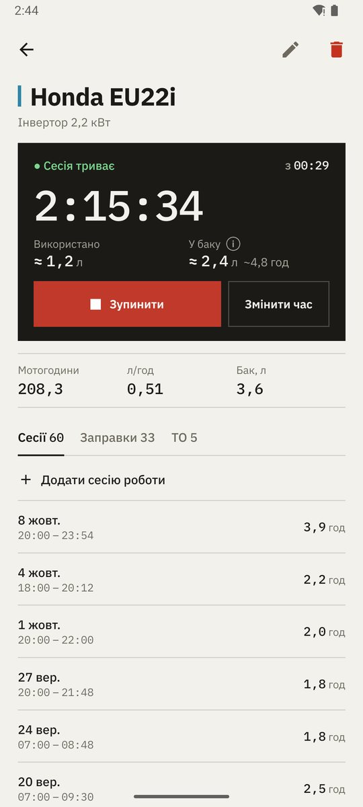
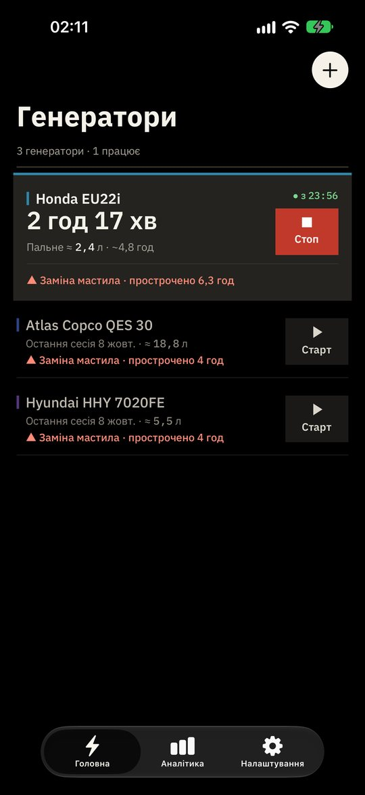

Усе для обліку
Старт і стоп одним дотиком, мотогодини, залишок пального в баку, заправки, нагадування про ТО за годинами чи днями та графіки по місяцях.
Безкоштовне завантаження
Журнал для вашого генератора. Натискаєте «Старт» і «Стоп», а застосунок рахує мотогодини, показує залишок пального й нагадує про мастило, фільтри та свічки. Безкоштовно на iPhone, iPad та Android. Працює без інтернету й без облікового запису.
Без реєстрації · Без підписок · Відкритий код


Що безкоштовно
Безкоштовної версії вистачає для всього обліку. Обмеження перелічено тут повністю, щоб після встановлення не було сюрпризів.
Старт і стоп одним дотиком, мотогодини, залишок пального в баку, заправки, нагадування про ТО за годинами чи днями та графіки по місяцях.
У безкоштовній версії можна вести до 3 генераторів і по 2 завдання ТО на кожен. Наявні записи ніколи не приховуються й не видаляються.
Реклама є на екранах «Аналітика» й «Налаштування». Її немає на головному екрані, біля кнопок «Старт» і «Стоп» та під час запуску.
«Прибрати рекламу» — $0.99, «Без обмежень» — $0.99, «Усе разом» — $1.49. Разові покупки без підписок, відновлюються на інших ваших пристроях.
Версії
Обидві версії ведуть той самий облік однаково. У платному застосунку для Android просто немає реклами, обмежень і покупок.
| БезкоштовнаiPhone, iPad, Android (Lite) | ПлатнаAndroid | |
|---|---|---|
| Ціна | Безкоштовно | Один платіж у Google Play |
| Мотогодини, пальне, ТО, графіки | Так | Так |
| Працює офлайн, без облікового запису | Так | Так |
| Синхронізація між вашими пристроями (за бажанням) | Так | Так |
| Генератори | До 3 — без обмежень після разової покупки | Без обмежень |
| Завдань ТО на генератор | 2 — без обмежень після разової покупки | Без обмежень |
| Реклама | На двох екранах — можна прибрати один раз | Немає |
| Покупки в застосунку | За бажанням, разові | Немає |
Для Android є платний Generator Tracker: без реклами, без обмежень і без покупок усередині. На iPhone та iPad те саме дає разова покупка «Усе разом» у безкоштовному застосунку.
Встановлення
Без реєстрації та майстра налаштувань.
App Store на iPhone та iPad, Google Play на Android. Обидва варіанти безкоштовні.
Дайте йому назву. Вкажіть об'єм бака, якщо хочете бачити залишок пального.
І «Стоп», коли заглушили. Мотогодини й пальне порахуються самі, а нагадування про мастило прийде вчасно.
Питання
Так. Generator Tracker для iPhone та iPad і Generator Tracker Lite для Android можна завантажити й використовувати безкоштовно. Вони показують рекламу на двох екранах і дозволяють вести до 3 генераторів із 2 завданнями ТО на кожен. Рекламу чи обмеження можна прибрати разовою покупкою: по $0.99 або $1.49 за обидві.
Це той самий застосунок. Generator Tracker Lite безкоштовний, з рекламою й обмеженнями, які можна прибрати один раз. Generator Tracker — платна версія: ви платите один раз у Google Play, і в ній немає реклами, обмежень та покупок.
Ні. Усе зберігається на телефоні й працює офлайн. Обліковий запис необов'язковий і лише синхронізує ваші записи між вашими пристроями.
Ні, підписок немає. Кожна покупка оплачується один раз і лишається за вашим обліковим записом App Store чи Google Play.
На iPhone та iPad з iOS чи iPadOS 16.4 і новішими, а також на телефонах, планшетах і складаних смартфонах з Android 7.0 і новішими.
Generator Tracker створює Юрій Валігурський, незалежний розробник з України, де через відключення світла генератори стали частиною повсякдення. Код відкритий під ліцензією MIT, тож будь-хто може прочитати його на GitHub. Власної аналітики чи стеження в застосунку немає; реклама запитує згоду там, де цього вимагає закон.
Встановлюється за хвилину. Працює без зв'язку.

Скануйте, щоб встановитиВідкриє Google Play або App Store — залежно від вашого телефона.